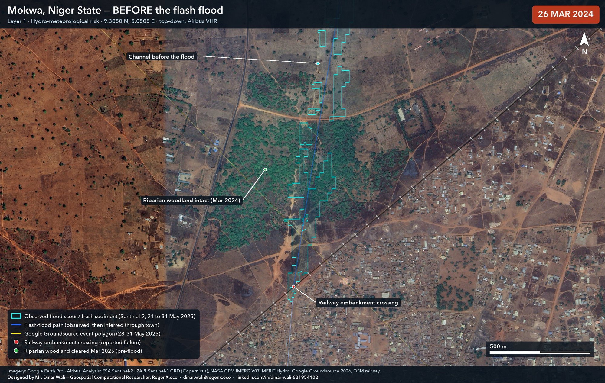
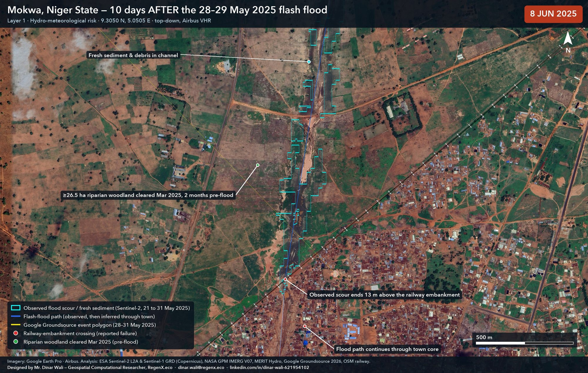
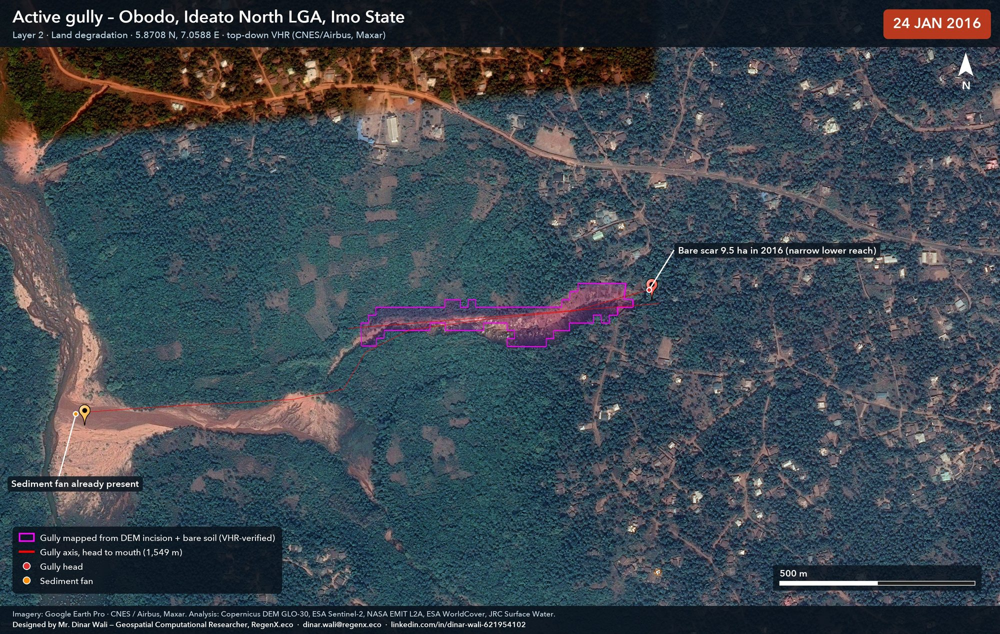
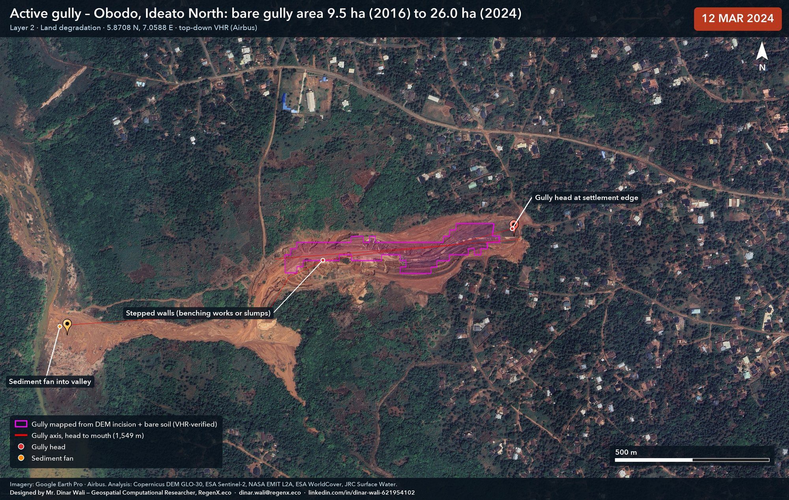
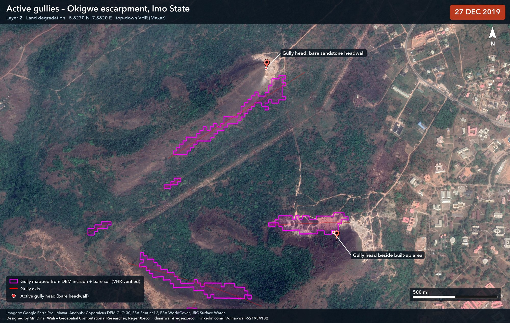
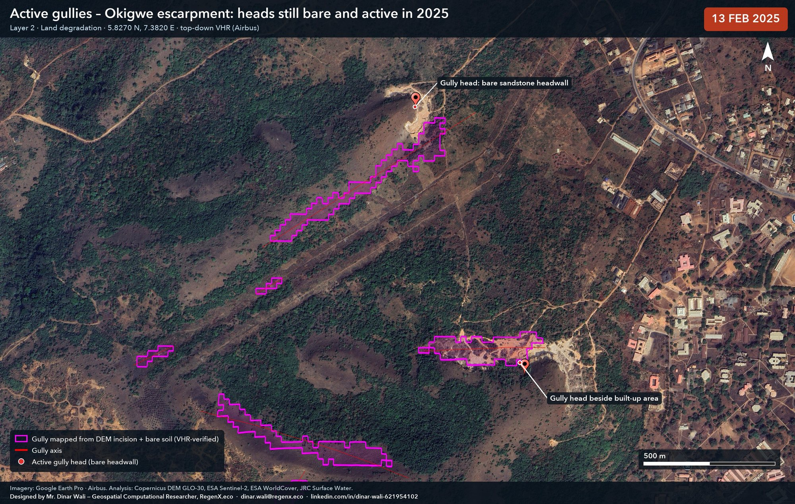
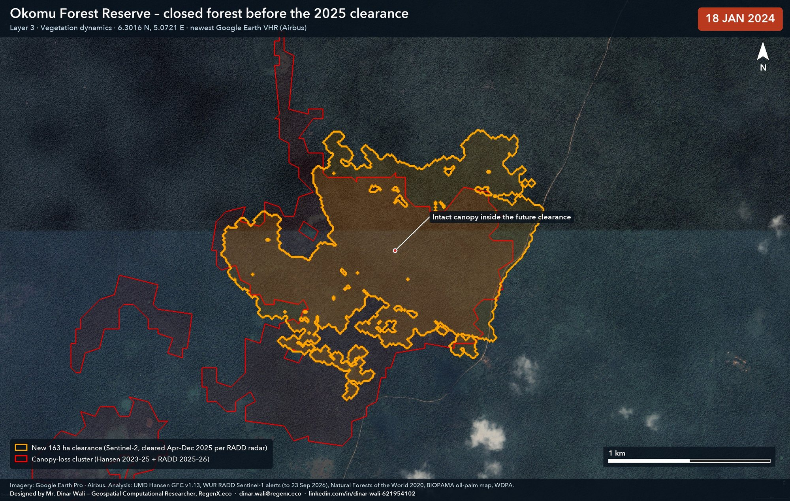
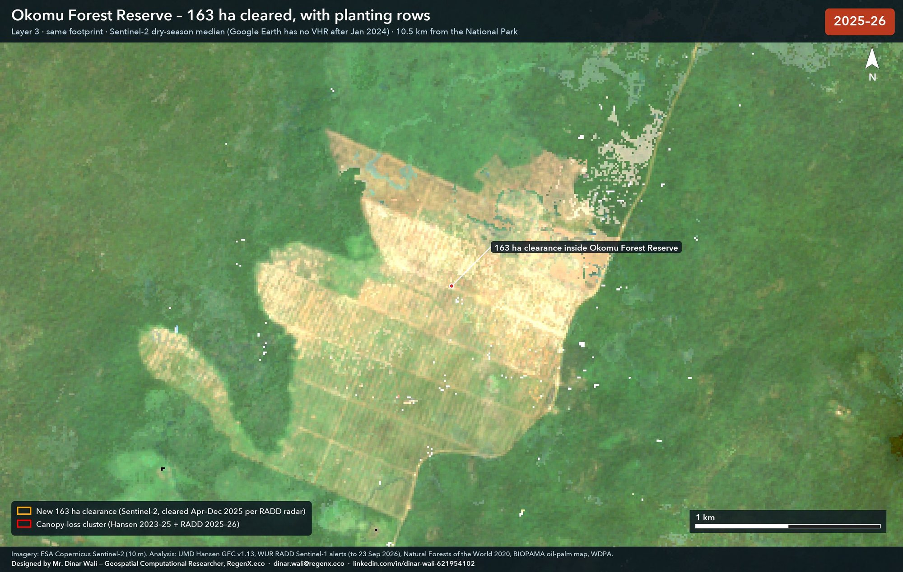
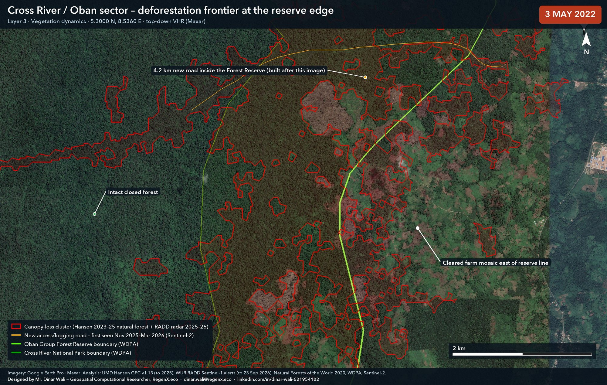
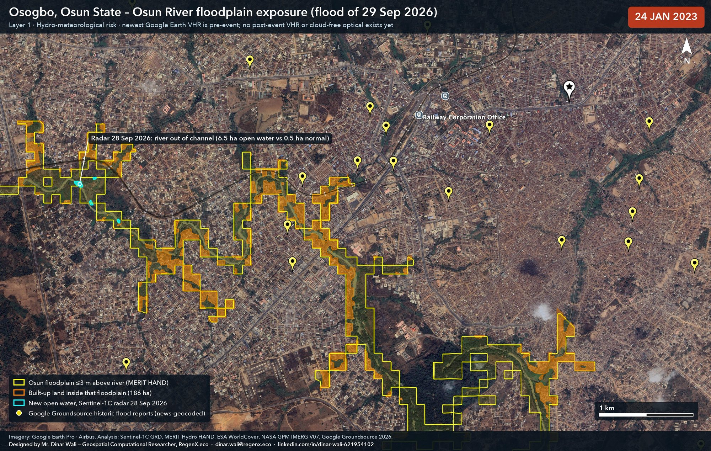

Three risk layers checked against satellite evidence: flash floods at Mokwa and Osogbo, gully erosion in Imo State, and canopy loss in the last southern rainforest blocks. Every polygon on the map comes from a measurement. Where the evidence does not exist yet, the page says so.
NASA IMERG recorded at most 34 mm in 48 h within 30 km of Mokwa. That is below the annual-maximum single day in every year from 2001 to 2024 (29–102 mm). The mapped flood scour runs straight to the railway embankment and stops 13 m above it, and 26.5 ha of riparian woodland upstream had been cleared two months earlier.
At Obolo the VHR shows pits and lake shore, not erosion. The screen found the real gullies at Obodo (Ideato North), where bare area grew from 9.5 ha in 2016 to 26.0 ha in 2024, and on the Okigwe escarpment.
Natural-forest loss in the Oban Group Forest Reserve went from 592 ha (2011–15) to 7,619 ha (2021–25), almost 13 times higher. A 4.2 km road was cut into the reserve in 2025–26, and at Okomu a 163 ha block was cleared inside the reserve in 2025.
Automated run combining WeatherNext 3 ensemble rain forecasts, NASA IMERG rainfall, Sentinel-1 radar and RADD forest alerts. Levels rise at once and drop only after two quieter runs. A late source is marked stale and never used.
| Site | Hazard | Level | Reason |
|---|
| Source | Latest data | Age | State |
|---|
Radar forest alerts are confirmed 2–6 weeks after cutting, so the latest 30 days are always undercounted.
Bars: ensemble-mean daily rain. Whisker: sum of hourly p10 to sum of hourly p90, an envelope wider than the true daily spread (WeatherNext 3 publishes percentiles, not members). Dashed line: 40 mm Watch threshold.
| Lead | Error, WN3 | Error, WN3 (IMERG-tuned) | Error, climatology | Warning rule (≥20 mm) | Watch rule (envelope ≥40 mm) |
|---|
Error = mean absolute error in mm/day. Hits = heavy days (≥20 mm observed) caught; FA = false alarms on other days. Two weeks of data: a first check, not a final score.
| Rain ≥ (mm, 1 day) | Floods caught | Normal days flagged |
|---|
| River gauge | Google NSE | GloFAS NSE | Google KGE | GloFAS KGE |
|---|
From Nearing et al., Nature 2024 (hindcast 1980–2021, model not trained on these gauges). 1 = perfect, 0 = no better than the average flow. All 8 Nigerian test gauges are in the north (Kano, Jigawa, Yobe); none covers our sites. Live Flood Hub forecasts need Google's API approval (waitlist submitted separately).










| Source | Provider | Used for | Status |
|---|---|---|---|
| Google Earth Pro historical VHR | Airbus, Maxar, CNES | Pre/post comparison and visual verification at every site; 9 renders at 8192 × 5199 | used |
| Sentinel-2 L2A (10 m) | ESA Copernicus | Mokwa scour (21 → 31 May 2025), gully bare-soil screen, forest frontier, Okomu post panel | used |
| Sentinel-1 GRD SAR (C-band) | ESA Copernicus | Osogbo open water (S1C, 28 Sep 2026); Mokwa pre/post backscatter (23 May / 4 Jun 2025) | used |
| RADD forest-disturbance alerts | Wageningen Univ. (Sentinel-1) | 2025–26 canopy loss through 23 Sep 2026; dating the Okomu clearance | used |
| Groundsource 2026 | Google Research | News-derived flood events: Mokwa 28–31 May 2025 confirmed; Osogbo history (58 records); archive ends 3 Feb 2026 | used |
| GPM IMERG V07 | NASA Earthdata | Event rainfall and 2001–2024 annual-maximum climatology at both flood sites | used |
| EMIT L2A reflectance (imaging spectrometer) | NASA / JPL | Imo gully screen: 14 overpasses, only 22 Dec 2024 partly clear (62–100 % flagged over the gullies). Iron-oxide and kaolinite band depths only separated bare soil from forest; not decisive | limited |
| Hansen Global Forest Change v1.13 | Univ. of Maryland | Annual tree-cover loss 2001–2025, masked to natural forest and non-oil-palm | used |
| Natural Forests of the World 2020; global oil-palm map | Google / WRI; BIOPAMA | Masks so plantation harvest is not counted as rainforest loss | used |
| Copernicus DEM GLO-30; MERIT Hydro (HAND, flow accumulation) | ESA; Univ. of Tokyo | Gully incision; floodplain exposure; flood-path drainage | used |
| ESA WorldCover; WDPA; OpenStreetMap | ESA; UNEP-WCMC; OSM | Built-up exposure; reserve boundaries; Mokwa railway line | used |
| WeatherNext 3 ensemble (0.1°, 15 days) | Google DeepMind via Earth Engine | Live rain forecasts (mean, p10–p90) for flood Watch/Warning; verified against IMERG and on the Osogbo 28 Sep event | used |
| Google Flood Hub / Flood Forecasting API | Google Research | Live river forecasts need API approval (pilot waitlist). Used now: the model's published Nigeria skill scores (Nature 2024) | pending access |
| "Ese model" (as named in the brief) | — | I could not identify a model by this name. If it means Google's AlphaEarth Satellite Embedding or an echo-state network (ESN), neither changes a finding here; an ESN hindcast in earlier RegenX work scored below a simple baseline, so it is not used as evidence | not used |